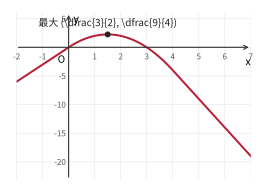
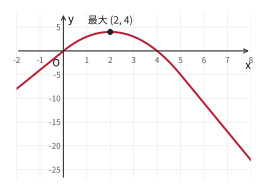
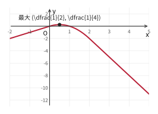

ホーム ＞ 数学I ＞ 2次関数の最大・最小
別冊練習問題 8 の解答 最小値 m(a) の最大値
(1) \(0\leqq x\leqq 4\) における \(f(x)=x^2-2ax+3a\) の最小値を \(m(a)\) とする。\(m(a)\) の最大値とそのときの \(a\) の値を求めよ。
軸の位置で場合分け
\(f(x)=x^2-2ax+3a=(x-a)^2-a^2+3a\)、\(0\leqq x\leqq4\)。軸 \(x=a\)。
\[m(a)=\begin{cases}3a&(a<0)\\3a-a^2&(0\leqq a\leqq 4)\\16-8a+3a&(a>4)\end{cases}\]場合分けした \(m(a)\) を、横軸 \(a\) のグラフにすると、\(a=\dfrac{3}{2}\) で最大になる。

各場合の最大
\(a<0\)：増加で \(m(a)<0\)。\(a>4\)：傾き \(-5\)（負）で減少。
\[0\leqq a\leqq 4:\ m(a)=-\left(a-\dfrac{3}{2}\right)^2+\dfrac{9}{4}\]最大値
\(a=\dfrac{3}{2}\) は \(0\leqq a\leqq4\) に含まれるので、最大値は \(\dfrac{9}{4}\)。
【答案】
\[a=\dfrac{3}{2}\ \text{のとき最大 }\dfrac{9}{4}\]答
(2) \(0\leqq x\leqq 5\) における \(f(x)=x^2-2ax+4a\) の最小値を \(m(a)\) とする。\(m(a)\) の最大値とそのときの \(a\) の値を求めよ。
軸の位置で場合分け
\(f(x)=x^2-2ax+4a=(x-a)^2-a^2+4a\)、\(0\leqq x\leqq5\)。軸 \(x=a\)。
\[m(a)=\begin{cases}4a&(a<0)\\4a-a^2&(0\leqq a\leqq 5)\\25-10a+4a&(a>5)\end{cases}\]場合分けした \(m(a)\) を、横軸 \(a\) のグラフにすると、\(a=2\) で最大になる。

各場合の最大
\(a<0\)：増加で \(m(a)<0\)。\(a>5\)：傾き \(-6\)（負）で減少。
\[0\leqq a\leqq 5:\ m(a)=-\left(a-2\right)^2+4\]最大値
\(a=2\) は \(0\leqq a\leqq5\) に含まれるので、最大値は \(4\)。
【答案】
\[a=2\ \text{のとき最大 }4\]答
(3) \(0\leqq x\leqq 2\) における \(f(x)=x^2-2ax+a\) の最小値を \(m(a)\) とする。\(m(a)\) の最大値とそのときの \(a\) の値を求めよ。
軸の位置で場合分け
\(f(x)=x^2-2ax+a=(x-a)^2-a^2+a\)、\(0\leqq x\leqq2\)。軸 \(x=a\)。
\[m(a)=\begin{cases}a&(a<0)\\1a-a^2&(0\leqq a\leqq 2)\\4-4a+a&(a>2)\end{cases}\]場合分けした \(m(a)\) を、横軸 \(a\) のグラフにすると、\(a=\dfrac{1}{2}\) で最大になる。

各場合の最大
\(a<0\)：増加で \(m(a)<0\)。\(a>2\)：傾き \(-3\)（負）で減少。
\[0\leqq a\leqq 2:\ m(a)=-\left(a-\dfrac{1}{2}\right)^2+\dfrac{1}{4}\]最大値
\(a=\dfrac{1}{2}\) は \(0\leqq a\leqq2\) に含まれるので、最大値は \(\dfrac{1}{4}\)。
【答案】
\[a=\dfrac{1}{2}\ \text{のとき最大 }\dfrac{1}{4}\]答